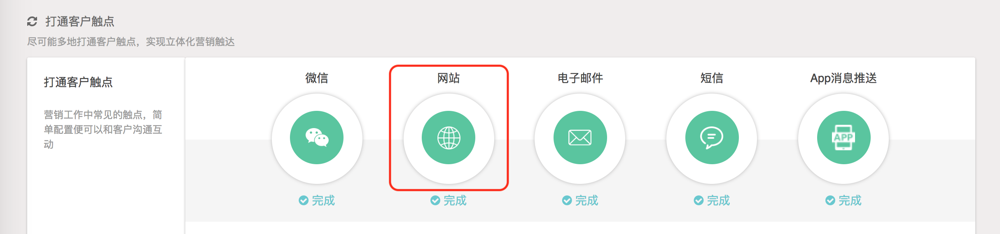
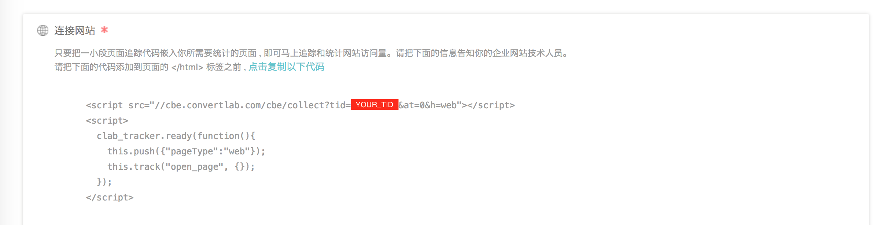
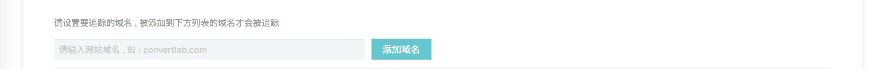
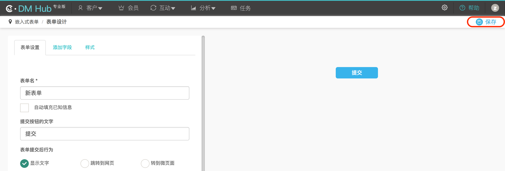
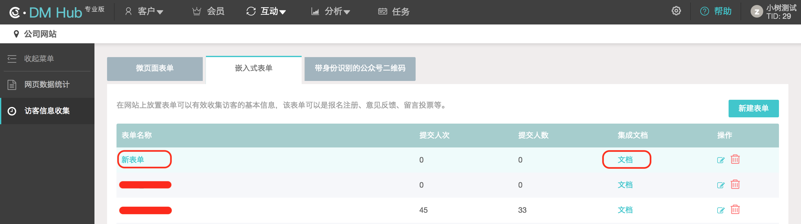
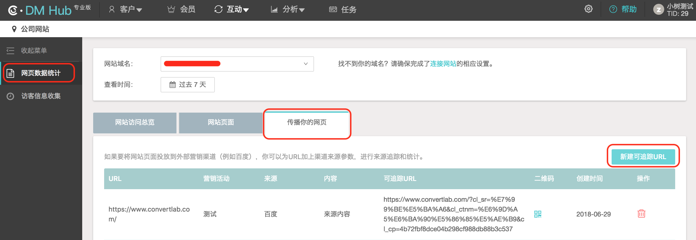

通过网站埋点进行数据采集
1. 网站埋点说明
DM Hub 中的网站埋点功能可以帮您统计网站流量，追踪流量来源，捕获网站访客信息。
比起单一的网站流量统计与追踪，DM Hub 能够将线索在各渠道留下的痕迹整合，为营销人员提供完整的客户画像，以进行更加精准的营销与内容推送。
2. 设置追踪网站
在【设置】-【设置中心】中选择【网站】模块进行追踪网站设置。

2.1 嵌入追踪代码

在所有需要统计的网站页面中嵌入追踪代码：
<script src="//cbe.convertlab.com/cbe/collect?tid={YOUR_TID}&at=0&h=web"></script>
<script>
clab_tracker.ready(function(){
this.push({"pageType": "web"});
this.track("open_page", {});
});
</script>
其中的 {YOUR_TID} 是变化的，请前往追踪网站设置页面获取。
2.2 设置追踪域名

设置要追踪的网站的域名，只有设置过的域名才会被追踪。
3. 跟踪客户事件
3.1 打开链接触发的事件
对于打开链接触发的事件，有两种方式来进行跟踪，开发者可以根据使用需求选择其中一种方式。
- 方式一
在被打开的页面中放入如下代码：
<script src="//cbe.convertlab.com/cbe/collect?tid={YOUR_TID}&at=0&h=web"></script>
<script>
clab_tracker.ready(function(){
this.push({});
this.track(event, targetName, targetId);
});
</script>
其中的 {YOUR_TID} 是变化的，请前往追踪网站设置页面获取。
- 方式二
在链接上添加 data-cl-event 和 data-cl-id 属性，
值 {event} 为要触发的事件,
值 {id} 为事件的targetId。
<a data-cl-event="{event}" data-cl-id="{id}"></a>
3.2 其他行为触发的事件
如果事件不是由打开链接触发的，可以通过如下 track 方法来提交事件：
if (clab_tracker) {
clab_tracker.track(event, targetName, targetId, properties, callback);
}
track 方法参数说明：
| 参数 | 说明 |
|---|---|
| event | 事件 id |
| targetName | 比如事件为关注公众号，targetName 为公众号的名字 |
| targetId | 比如事件为关注公众号，targetId 为公众号在 DM Hub 系统中的 id |
| properties | 可选，如果有 properties 参数会替换 page 的 properties |
| callback | 可选，如果有 callback 在完成 track 发送动作后调用此方法 |
4. 获取嵌入式表单
4.1 新建表单
登录 DM Hub 系统，在【互动】-【公司网站】中选择【访客信息收集】-【嵌入式表单】新建嵌入式表单。

根据实际需求创建表单完成后，点击【保存】完成创建。

4.2 集成表单
表单创建完成后，在嵌入式表单列表中就会出现新创建的表单，开发者可以点击对应表单的【文档】按钮查看表单的集成文档。

4.2.1 场景一：使用 DM Hub 嵌入式表单
使用该方式将自动在网页上生成表单，无需自行开发。
<form id="clForm" data-cl-attached="true" data-cl-id="{表单UUID}" action="http://host.convertlab.com/form/{表单UUID}" method="POST"></form>
<script type="text/javascript" src="http://host.convertlab.com/js/forms/form.js"></script>
<script>
_clForm.loadForm("http://host.convertlab.com", "{表单UUID}",{
formInit: function(){},
beforeSubmit: function(){},
onSubmit: function(args){}
});
</script>
其中 {表单UUID} 填写在 DM Hub 中创建的具体表单的 uuid。此外，需要在网页的合适地方嵌入追踪脚本，嵌入方式参考 2. 设置追踪网站。
4.2.2 场景二：使用自定义表单
如果需要使用自定义表单，请按照下述步骤自行开发：
-
自行开发表单，并在 DM Hub 中创建相同字段的嵌入式表单用来接收数据。请确保自定义表单字段的
name属性和生成的嵌入式表单中对应字段的name（即 DM Hub 客户属性 ID）相同。 -
在自定义表单的 form 标签中增加如下两个 data 属性：
data-cl-attached="false" data-cl-id="{表单UUID}"，其中{表单UUID}填写在 DM Hub 中创建的具体表单的 uuid。 -
按要求嵌入追踪脚本，嵌入方式参考 2. 设置追踪网站。
-
追踪脚本会在表单中增加如下字段：
<input type="hidden" name="cl_context" value="utma=xxx.xxx&utmb=xxx.xxx"> -
发 GET 请求获取 cltoken，该 token 在提交表单时使用，并且只能使用一次，如果要再次提交需重新获取 cltoken。获取方式如下：GET:
http://host.convertlab.com/formdata/get/{表单UUID}，其中{表单UUID}填写具体表单的 uuid。获得的数据中包含名称为token的数据，即后续提交表单时要使用的 cltoken。 -
提交表单时，将表单数据以 form data 的形式提交，请注意字段名称必须和创建的嵌入式表单匹配，同时 form data 里需额外增加一个字段 cltoken，值为前面请求取到的 token 值。隐藏字段 cl_context 里面的 utma 和 utmb 也请一并提交。提交表单的地址：POST:
http://host.convertlab.com/page/{表单UUID}?channelType={channelType}&userId={userId}，其中{表单UUID}填写具体表单的 uuid，{channelType}和{userId}根据实际情况酌情添加，{channelType}表示当前渠道，例如 wechat，{userId}表示用户在当前渠道的 ID，例如当前用户的 openId。
使用自定义表单的示例代码：
<form id="clForm" method="post" data-cl-attached="false" action="http://host.convertlab.com/page/{表单UUID}?channelType={channelType}&userId={userId}">
<!-- 此处示例 3 个表单字段，实际开发中请确保每个字段的 name 属性和 DM Hub 中创建的嵌入式表单中对应字段的 name 相同 -->
<!-- DM Hub 预置客户属性，DM Hub 预置，不可修改 -->
姓名：<input type="text" name="name" /><br/>
<!-- DM Hub 预置客户属性，DM Hub 预置，不可修改 -->
手机号码：<input type="text" name="mobile" /><br/>
<!-- DM Hub 自定义客户属性，根据业务需求自行创建 -->
自定义属性：<input type="text" name="attr1" /><br/>
<input type="hidden" id="cltoken" name="cltoken" value="" />
<input type="hidden" id="utmb" name="utmb" value="" />
<input type="hidden" id="utma" name="utma" value="" />
<input type="button" value="提交" onclick="f1()" class="buttons" />
</form>
<script>
function f1() {
$.ajaxSettings.async = false;
$.getJSON("http://host.convertlab.com/formdata/get/{表单UUID}", function(json) {
$("#cltoken").val(json.token);
});
var cookievalue = $("input[name='cl_context']").val();
if (cookievalue == "" || cookievalue == null) {
$("#utma").val("");
$("#utmb").val("");
} else {
var cookiearr = cookievalue.split("&");
var str1 = cookiearr[0];
var utmas = str1.split("=");
var utmavalue =utmas[1];
var str2 = cookiearr[1];
var utmbs = str2.split("=");
var utmbvalue =utmbs[1];
$("#utma").val(utmavalue);
$("#utmb").val(utmbvalue);
}
var fromurl = $("form").attr("action");
$.ajax({
cache: true,
type: "POST",
url:fromurl,
data:$('#clForm').serialize(),
async: false,
error: function(request) {
alert("Connection error");
},
success: function(data) {
alert("success");
window.location="xxxxxx.jsp";
}
});
}
</script>
5. 用户来源跟踪
如果需要将网站页面投放到外部营销渠道（例如百度），可以在 URL 中加上渠道来源参数，进行来源追踪和统计。
5.1 新建可追踪 URL
登录 DM Hub 系统，在【互动】-【公司网站】中选择【网页数据统计】-【传播你的网页】新建可追踪 URL。

5.2 网站页面引入 JS 代码
创建可追踪 URL 后，在网站的每个页面中都需要引入如下 JS 代码：
$(document).ready(function() {
var pageurl = window.location.href;
var urlsource = "";
if(pageurl.indexOf("cl_sr") != -1) {
var arrs = pageurl.split("cl_sr");
var urlsource = arrs[1];
urlsource = "?cl_sr" + urlsource;
}
$("a").each(function() {
var href = $(this).attr("href");
if(urlsource != "") {
var Ahref = href + urlsource;
$(this).attr("href", Ahref);
}
});
});